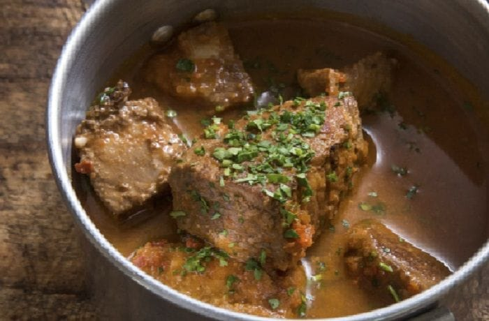
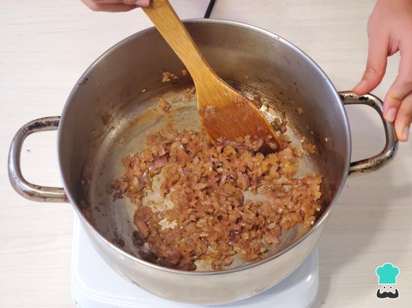
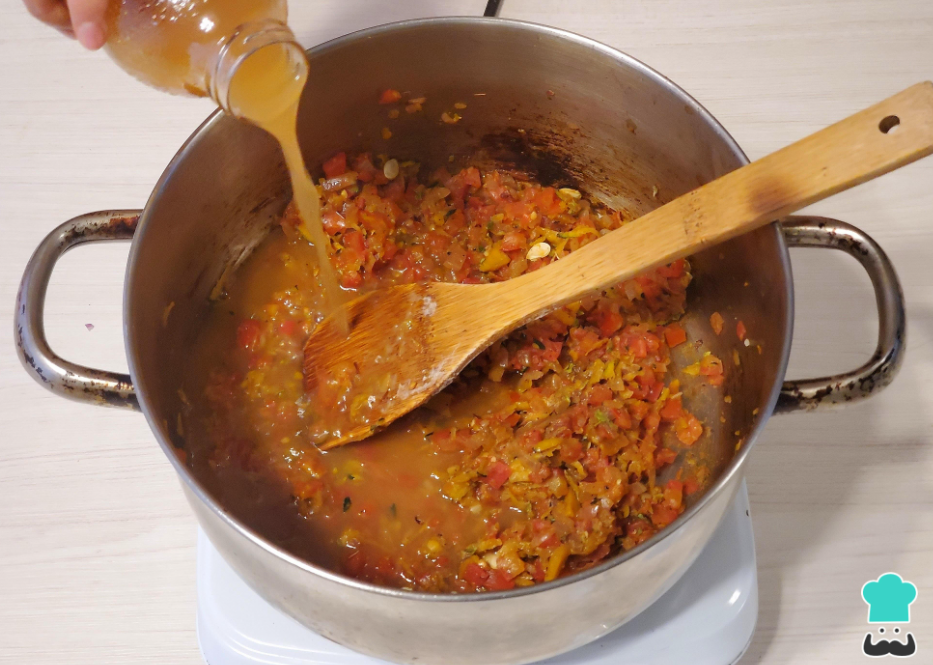
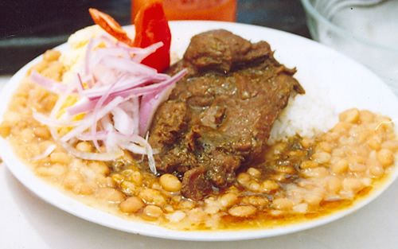

Sabor Criollo
Sabores peruanos que conquistan el corazón
Sabores peruanos que conquistan el corazón

El Seco de Cabrito es uno de los platos más representativos del norte peruano. Preparado con carne de cabrito tierna, cocinada lentamente con chicha de jora, culantro y especias tradicionales, es un plato cargado de aroma y sabor, acompañado usualmente de frejoles y arroz blanco. Un verdadero clásico de la comida peruana.




Aprende a preparar este delicioso plato norteño paso a paso.